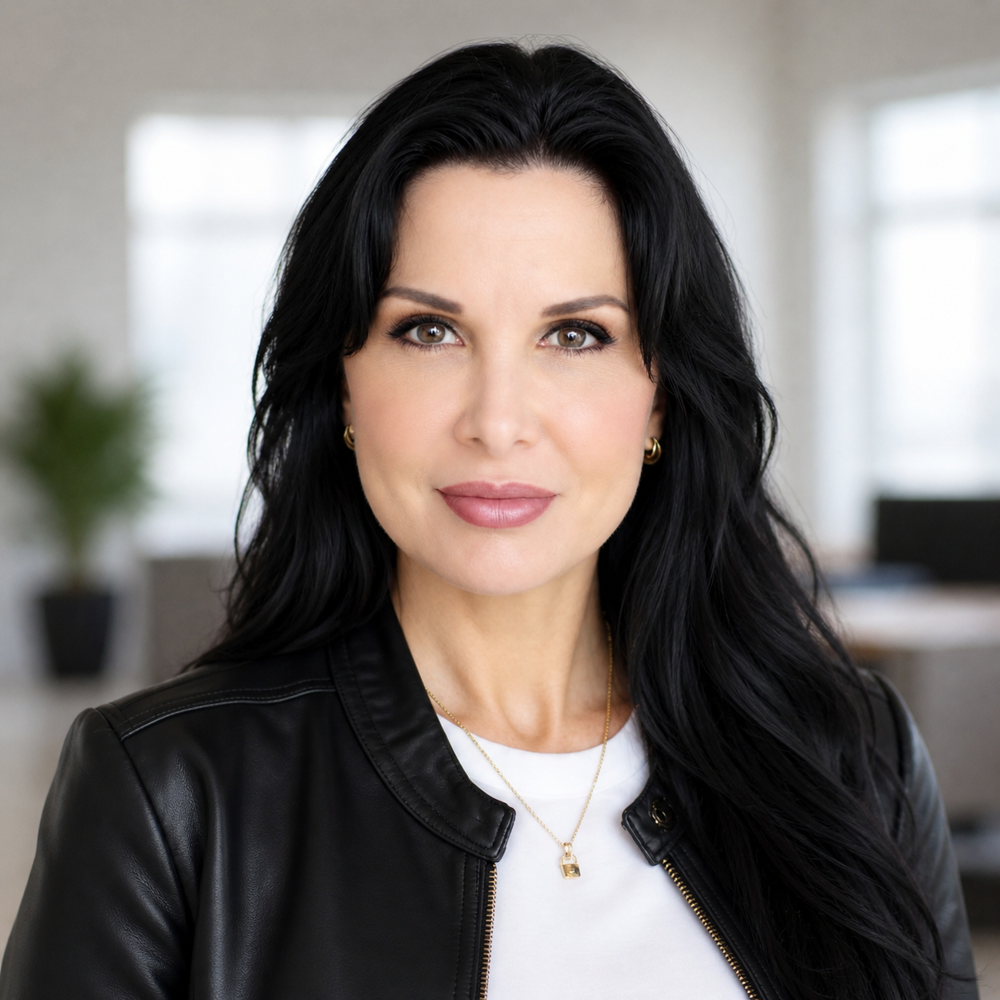

Angelica Briceño, DNP
Master Injector | Aesthetic Medicine & Wellness
Angelica Briceño is a Doctor of Nursing Practice and Board-Certified Nurse Practitioner with foundational medical training as a Medical Doctor. She also holds advanced postgraduate education in Aesthetic Medicine and Healthcare Informatics.
With extensive experience in cosmetic dermatology, advanced medical lasers, aesthetic injectables, and wellness-focused care, Dr. Briceño delivers natural-looking results through a refined blend of science, technology, and artistic precision.